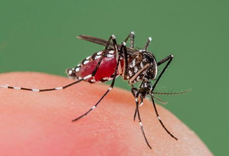

Prevention is better than cure. But what are you doing for it?
If you know and act accordingly for these most common diseases you could say you're halfway done!
-
Jaundice
Yellow tinge to the skin and the whites of the eyes, normally starting at the head and spreading down the body.
Pruritis (itchiness)
Fatigue.
Abdominal pain - typically indicates a blockage of the bile duct.
Weight loss.
Vomiting.
Fever.
Paler than usual stools.
-
Dengue

Pain areas: in the abdomen, back, back of the eyes, bones, joints, or muscles
Whole body: chills, fatigue, fever, or loss of appetite
Gastrointestinal: nausea or vomiting
Skin: rashes or red spots
Also common: easy bruising or headache
-
Malaria
Pain areas: in the abdomen or muscles
Whole body: chills, fatigue, fever, night sweats, shivering, or sweating
Gastrointestinal: diarrhoea, nausea, or vomiting
Also common: fast heart rate, headache, mental confusion, or pallor